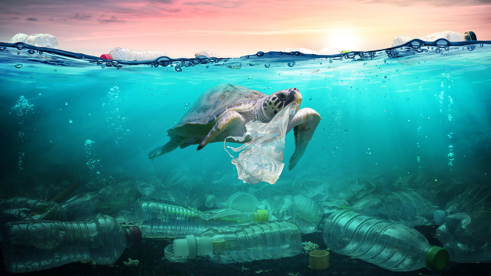
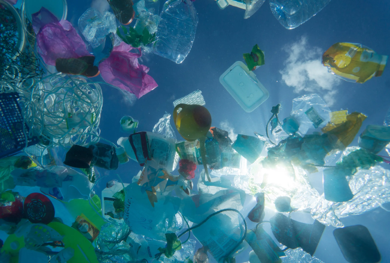
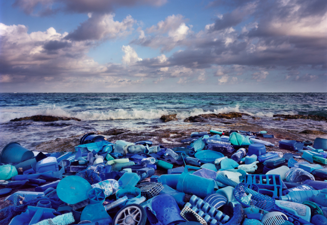

Мореведческие организации
Научный флот Минобрнауки России
Морские экспедиционные исследования
Подготовка специалистов
Статистика (Центр ЕСИМО)
Войти
10-летие ООН
наук об океане
Океан, который нам нужен, для будущего, которого мы хотим
НОВОСТИ
В. В. Путин утвердил Морскую доктрину и Корабельный устав ВМФ
1
/
4
Документация
История
Повестка 2030 и ЦУР
Возникновение идеи о Десятилетии
Заседания ГА ООН с вопросом о Десятилетии
Работа различных структур по подготовке Десятилетия
Рассмотрение вопросов по Десятилетию на Ассамблее и Исполсоветах МОК ЮНЕСКО
В мире
Принятие и начало реализации Плана действий по Десятилетию
Призывы к действиям
Национальные комитеты государств-членов МОК ЮНЕСКО
Координационные структуры Десятилетия
В России
Вопрос о Десятилетии на МНОК
Участие России в Призывах к действиям МОК
Разработка национального плана действий – «Целей и основных направлений действий …»
Цели и основные направления действий, их связь с ожидаемыми результатами Десятилетия
ОКЕАН, КОТОРЫЙ МЫ ИМЕЕМ

 
Общие задачи десятилетия
01.
Определение знаний, необходимых для устойчивого развития
02.
Накопление исчерпывающих знаний и формирование всеобъемлющего представления о Мировом океане
03.
Расширение масштабов применения научных знаний об океане
Деятельность в рамках десятилетия
01.
Программы
02.
Проекты
03.
Мероприятия
04.
Оказание поддержки